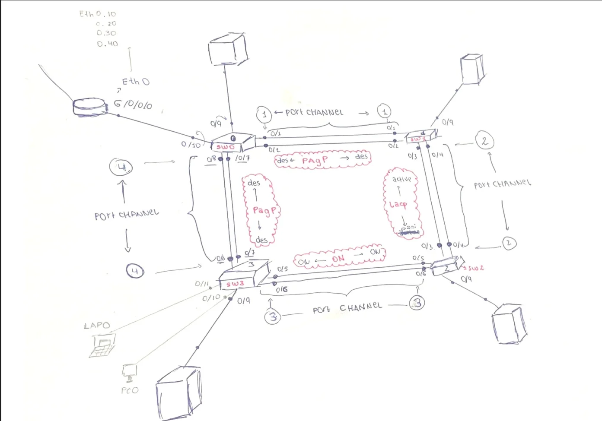
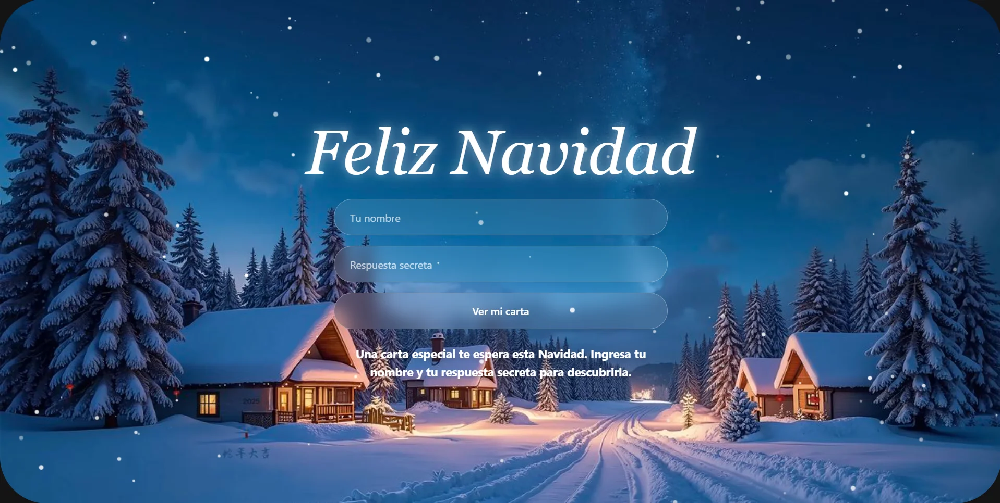

Hola, soy Katty
Estudiante de Ingeniería en Sistemas. Apasionada por el mundo del desarrollo de Ecuador. Centrada en la creación de aplicaciones creativas, funcionales y modernas.
Estudiante de Ingeniería en Sistemas. Apasionada por el mundo del desarrollo de Ecuador. Centrada en la creación de aplicaciones creativas, funcionales y modernas.
Me llamo Katty. Mi primer acercamiento serio a la tecnología fue en la universidad, fascinada por cómo unas líneas de código podían cobrar vida. Actualmente, soy estudiante de Ingeniería en Sistemas, forjando las bases para liderar proyectos innovadores. Uno de mis primeros hitos ha sido desarrollar soluciones prácticas, como automatizar flujos de trabajo con Python, demostrando que la tecnología resuelve problemas reales. Aunque sigo aprendiendo, cada proyecto es un paso hacia un software más robusto y pulido. Como futura ingeniera, mi objetivo es ir más allá del código. Me enfoco en el desarrollo de interfaces creativas y futuristas, especializándome en Frontend y UI para que cada aplicación no solo sea funcional, sino una experiencia visual increíble.

